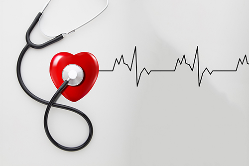

返回
健康每一天
-
节后除了收心还要“收胃”
一眨眼春天就这么过去了，一去不复返的假期,留下的却是一身无处安放的赘肉!
-

体检前的8个注意事项及禁忌
说起体检，大家都知道，在做体检前需要空腹，憋尿。但只知道这些还不够，只有在体检前准备充分了才算是不白做体检、检查结果也会更加准确！
-

体检时心跳过快怎么办？
体检时心跳过快怎么办？心电图是临床上最为常见且方便的心脏检查方式，它通过记录心脏的电活动，可以及时的发现心脏是否有心律失常以及心肌缺血。
-

PET-CT检查后饮食需要注意什么？
现代社会，医疗技术水平日益进步，作为能筛查人体内微小病灶的影像检查也在不停地更新换代。PET-CT检查作为医疗检查中先进的检查方式，也逐渐在各大医院开始应用。今天我们来了解一下：PET-CT检查后饮食需要注意什么？
-

体检时，这7个项目不能省！这些人更应重视体检
随着生活节奏的加快和工作压力的增大，一些不良的工作方式和生活方式使很多人的身体都处于亚健康状态，如长时间伏案工作、熬夜、酗酒、饮食结构不合理、运动少等等。